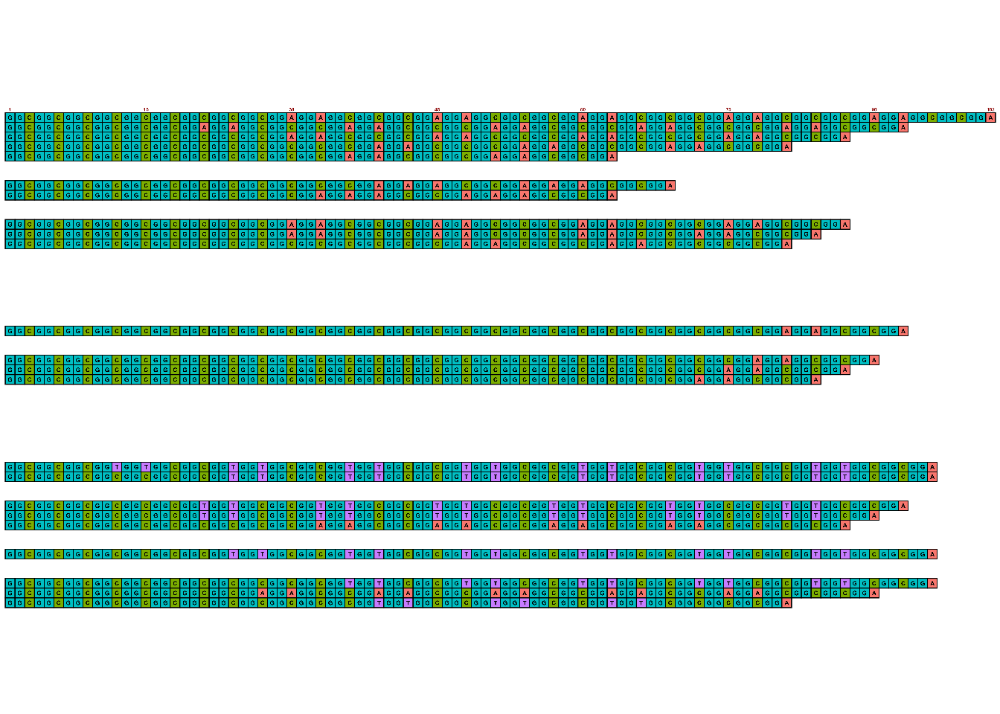
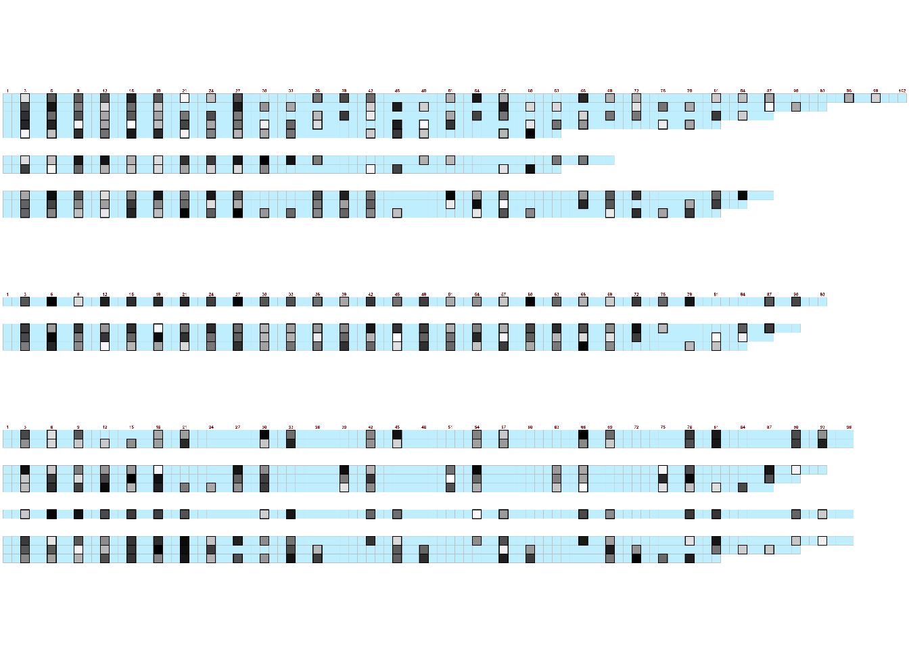
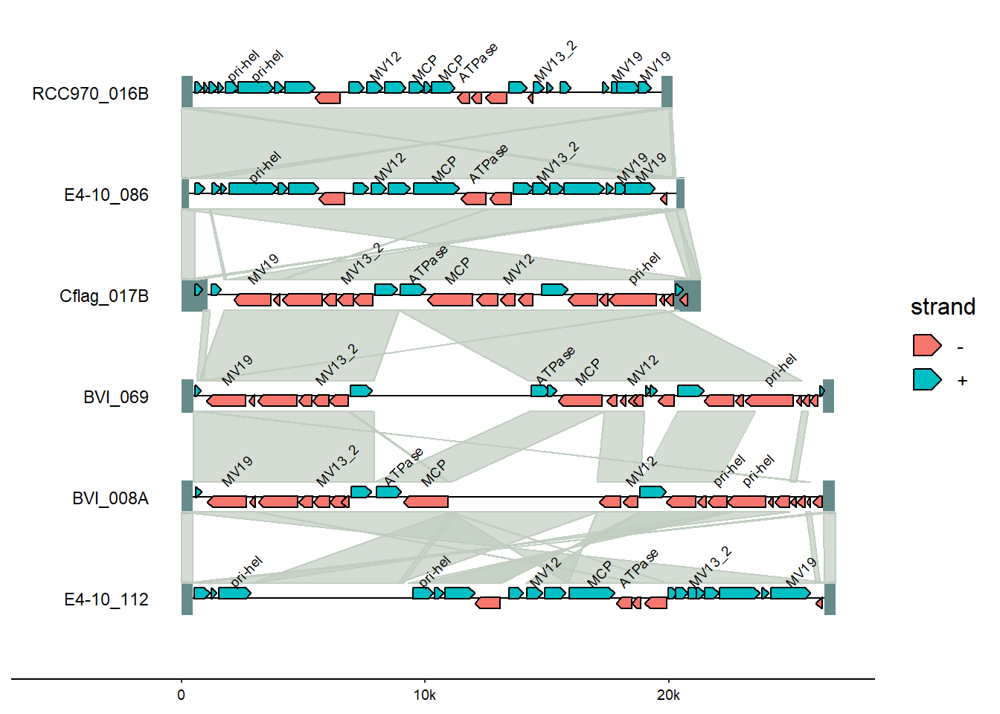
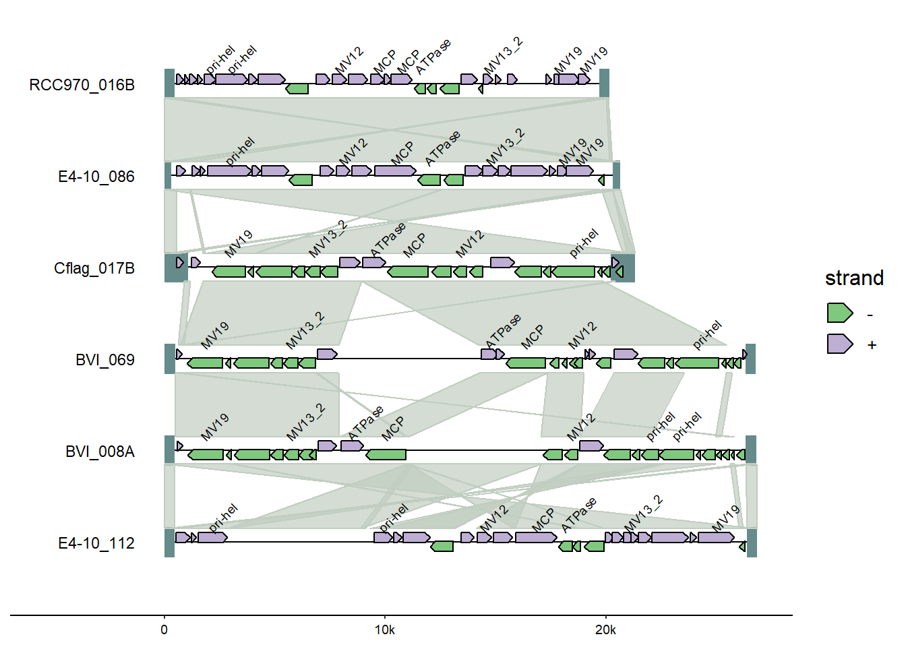
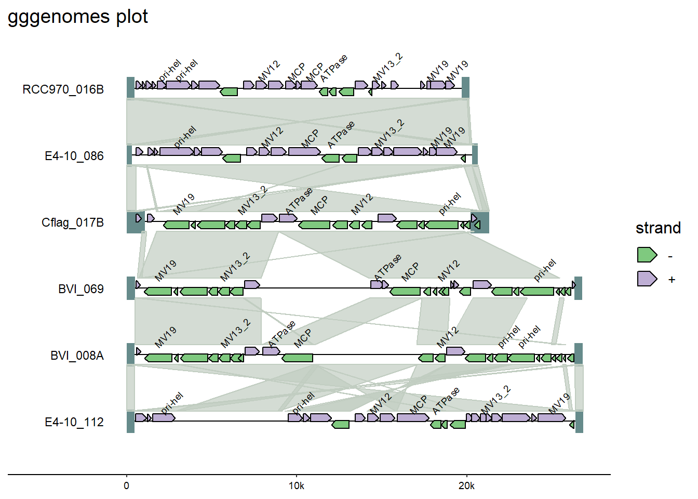

Demo: Sequencing Plots
ggplot extensions for specific data types
Along with statistical annotation extensions of ggplot2, there are also many extension packages designed to visualize specific types or formats of data, like sequencing data files or genomics data formats.
This section includes a brief demo of three of these packages: * ggDNAvis * gggenomes * ggtranscript
Sequence strings
The ggDNAviz package can make ggplot-style plots for genetic data: | a single DNA/RNA sequence split across multiple lines, | multiple DNA/RNA sequences, each occupying a whole line, or | base modifications such as DNA methylation called by modified-bases models in Dorado or Guppy.
#Install package (only the first time)
install.packages("ggDNAvis")library(tidyverse) #loads ggplot2 and other useful dependencies
library(ggDNAvis)Let’s recreate some of the plots in the official package documentation, using the built-in dataset example_many_sequences.
First, check out the sample data:
str(example_many_sequences)'data.frame': 23 obs. of 10 variables:
$ family : chr "Family 1" "Family 1" "Family 1" "Family 1" ...
$ individual : chr "F1-1" "F1-1" "F1-1" "F1-1" ...
$ read : chr "F1-1a" "F1-1b" "F1-1c" "F1-1d" ...
$ sequence : chr "GGCGGCGGCGGCGGCGGCGGCGGCGGCGGAGGAGGCGGCGGCGGAGGAGGCGGCGGCGGAGGAGGCGGCGGCGGAGGAGGCGGCGGCGGAGGAGGCGGCGGA" "GGCGGCGGCGGCGGCGGCGGCGGCGGCGGCGGCGGAGGAGGCGGCGGCGGAGGAGGCGGCGGA" "GGCGGCGGCGGCGGCGGCGGCGGCGGCGGAGGAGGCGGCGGCGGAGGAGGCGGCGGCGGAGGAGGCGGCGGCGGAGGAGGCGGCGGA" "GGCGGCGGCGGCGGCGGCGGCGGCGGCGGCGGCGGCGGAGGAGGCGGCGGCGGAGGAGGCGGCGGCGGAGGAGGCGGCGGA" ...
$ sequence_length : int 102 63 87 81 93 63 69 87 81 84 ...
$ quality : chr ")8@!9:/0/,0+-6?40,-I601:.';+5,@0.0%)!(20C*,2++*(00#/*+3;E-E)<I5.5G*CB8501;I3'.8233'3><:13)48F?09*>?I90" "60-7,7943/*=5=)7<53-I=G6/&/7?8)<$12\">/2C;4:9F8:816E,6C3*,1-2139" ";F42DF52#C-*I75!4?9>IA0<30!-:I:;+7!:<7<8=G@5*91D%193/2;><IA8.I<.722,68*!25;69*<<8C9889@" ":<*1D)89?27#8.3)9<2G<>I.=?58+:.=-8-3%6?7#/FG)198/+3?5/0E1=D9150A4D//650%5.@+@/8>0" ...
$ methylation_locations : chr "3,6,9,12,15,18,21,24,27,36,39,42,51,54,57,66,69,72,81,84,87,96,99" "3,6,9,12,15,18,21,24,27,30,33,42,45,48,57,60" "3,6,9,12,15,18,21,24,27,36,39,42,51,54,57,66,69,72,81,84" "3,6,9,12,15,18,21,24,27,30,33,36,45,48,51,60,63,66,75,78" ...
$ methylation_probabilities : chr "29,159,155,159,220,163,2,59,170,131,177,139,72,235,75,214,73,68,48,59,81,77,41" "10,56,207,134,233,212,12,116,68,78,129,46,194,51,66,253" "206,141,165,80,159,84,128,173,124,62,195,19,79,183,129,39,129,126,192,45" "216,221,11,81,4,61,180,79,130,13,144,31,228,4,200,23,132,98,18,82" ...
$ hydroxymethylation_locations : chr "3,6,9,12,15,18,21,24,27,36,39,42,51,54,57,66,69,72,81,84,87,96,99" "3,6,9,12,15,18,21,24,27,30,33,42,45,48,57,60" "3,6,9,12,15,18,21,24,27,36,39,42,51,54,57,66,69,72,81,84" "3,6,9,12,15,18,21,24,27,30,33,36,45,48,51,60,63,66,75,78" ...
$ hydroxymethylation_probabilities: chr "26,60,61,60,30,59,2,46,57,64,54,63,52,18,53,34,52,50,39,46,55,54,34" "10,44,39,64,20,36,11,63,50,54,64,38,46,41,49,2" "40,63,58,55,60,56,64,56,64,47,46,17,55,52,64,33,63,64,47,37" "33,29,10,55,3,46,53,54,64,12,63,27,24,4,43,21,64,60,17,55" ...head(example_many_sequences) family individual read
1 Family 1 F1-1 F1-1a
2 Family 1 F1-1 F1-1b
3 Family 1 F1-1 F1-1c
4 Family 1 F1-1 F1-1d
5 Family 1 F1-1 F1-1e
6 Family 1 F1-2 F1-2a
sequence
1 GGCGGCGGCGGCGGCGGCGGCGGCGGCGGAGGAGGCGGCGGCGGAGGAGGCGGCGGCGGAGGAGGCGGCGGCGGAGGAGGCGGCGGCGGAGGAGGCGGCGGA
2 GGCGGCGGCGGCGGCGGCGGCGGCGGCGGCGGCGGAGGAGGCGGCGGCGGAGGAGGCGGCGGA
3 GGCGGCGGCGGCGGCGGCGGCGGCGGCGGAGGAGGCGGCGGCGGAGGAGGCGGCGGCGGAGGAGGCGGCGGCGGAGGAGGCGGCGGA
4 GGCGGCGGCGGCGGCGGCGGCGGCGGCGGCGGCGGCGGAGGAGGCGGCGGCGGAGGAGGCGGCGGCGGAGGAGGCGGCGGA
5 GGCGGCGGCGGCGGCGGCGGAGGAGGCGGCGGCGGAGGAGGCGGCGGCGGAGGAGGCGGCGGCGGAGGAGGCGGCGGCGGAGGAGGCGGCGGA
6 GGCGGCGGCGGCGGCGGCGGCGGCGGCGGCGGAGGAGGAGGCGGCGGAGGAGGAGGCGGCGGA
sequence_length
1 102
2 63
3 87
4 81
5 93
6 63
quality
1 )8@!9:/0/,0+-6?40,-I601:.';+5,@0.0%)!(20C*,2++*(00#/*+3;E-E)<I5.5G*CB8501;I3'.8233'3><:13)48F?09*>?I90
2 60-7,7943/*=5=)7<53-I=G6/&/7?8)<$12">/2C;4:9F8:816E,6C3*,1-2139
3 ;F42DF52#C-*I75!4?9>IA0<30!-:I:;+7!:<7<8=G@5*91D%193/2;><IA8.I<.722,68*!25;69*<<8C9889@
4 :<*1D)89?27#8.3)9<2G<>I.=?58+:.=-8-3%6?7#/FG)198/+3?5/0E1=D9150A4D//650%5.@+@/8>0
5 ;4*2E3-48?@6A-!00!;-3%:H,4H>H530C(85I/&75-62.:2#!/D=A?8&7E!-@:=::5,)51,97D*04'2.!20@/;6)947<6
6 E6(<)"-./EE<(5:47,(C818I9CC1=.&)4G6-7<(*"(,2C>8/5:0@@).A$97I!-<
methylation_locations
1 3,6,9,12,15,18,21,24,27,36,39,42,51,54,57,66,69,72,81,84,87,96,99
2 3,6,9,12,15,18,21,24,27,30,33,42,45,48,57,60
3 3,6,9,12,15,18,21,24,27,36,39,42,51,54,57,66,69,72,81,84
4 3,6,9,12,15,18,21,24,27,30,33,36,45,48,51,60,63,66,75,78
5 3,6,9,12,15,18,27,30,33,42,45,48,57,60,63,72,75,78,87,90
6 3,6,9,12,15,18,21,24,27,30,42,45,57,60
methylation_probabilities
1 29,159,155,159,220,163,2,59,170,131,177,139,72,235,75,214,73,68,48,59,81,77,41
2 10,56,207,134,233,212,12,116,68,78,129,46,194,51,66,253
3 206,141,165,80,159,84,128,173,124,62,195,19,79,183,129,39,129,126,192,45
4 216,221,11,81,4,61,180,79,130,13,144,31,228,4,200,23,132,98,18,82
5 170,236,120,36,139,50,229,99,79,41,229,42,230,34,34,27,130,77,7,79
6 189,9,144,71,52,34,83,40,33,111,10,182,26,242
hydroxymethylation_locations
1 3,6,9,12,15,18,21,24,27,36,39,42,51,54,57,66,69,72,81,84,87,96,99
2 3,6,9,12,15,18,21,24,27,30,33,42,45,48,57,60
3 3,6,9,12,15,18,21,24,27,36,39,42,51,54,57,66,69,72,81,84
4 3,6,9,12,15,18,21,24,27,30,33,36,45,48,51,60,63,66,75,78
5 3,6,9,12,15,18,27,30,33,42,45,48,57,60,63,72,75,78,87,90
6 3,6,9,12,15,18,21,24,27,30,42,45,57,60
hydroxymethylation_probabilities
1 26,60,61,60,30,59,2,46,57,64,54,63,52,18,53,34,52,50,39,46,55,54,34
2 10,44,39,64,20,36,11,63,50,54,64,38,46,41,49,2
3 40,63,58,55,60,56,64,56,64,47,46,17,55,52,64,33,63,64,47,37
4 33,29,10,55,3,46,53,54,64,12,63,27,24,4,43,21,64,60,17,55
5 57,18,64,31,63,40,23,61,55,34,23,35,23,30,29,24,64,53,7,54
6 49,9,63,52,41,30,56,33,29,63,9,52,23,12To create a ggplot-style visualization of sequence data:
First, use one of the data processing function to extract and sort the sequence data from the full dataframe.
sequences <- extract_and_sort_sequences(example_many_sequences)
head(sequences)[1] "GGCGGCGGCGGCGGCGGCGGCGGCGGCGGAGGAGGCGGCGGCGGAGGAGGCGGCGGCGGAGGAGGCGGCGGCGGAGGAGGCGGCGGCGGAGGAGGCGGCGGA"
[2] "GGCGGCGGCGGCGGCGGCGGAGGAGGCGGCGGCGGAGGAGGCGGCGGCGGAGGAGGCGGCGGCGGAGGAGGCGGCGGCGGAGGAGGCGGCGGA"
[3] "GGCGGCGGCGGCGGCGGCGGCGGCGGCGGAGGAGGCGGCGGCGGAGGAGGCGGCGGCGGAGGAGGCGGCGGCGGAGGAGGCGGCGGA"
[4] "GGCGGCGGCGGCGGCGGCGGCGGCGGCGGCGGCGGCGGAGGAGGCGGCGGCGGAGGAGGCGGCGGCGGAGGAGGCGGCGGA"
[5] "GGCGGCGGCGGCGGCGGCGGCGGCGGCGGCGGCGGAGGAGGCGGCGGCGGAGGAGGCGGCGGA"
[6] "" Then, use the visualize_many_sequqneces() function. We will save the image to a file within the same function, then import it back in to view. (If following along locally, you can directly open the created png from your local file explorer to view.)
#viewing in R isn't great; write to file image
visualize_many_sequences(sequences_vector = sequences,
filename = "ggDNAviz_plot.png",
#don't also show image in R
return = FALSE)#view created image
image <- png::readPNG("ggDNAviz_plot.png")
unlink("ggDNAviz_plot.png")
grid::grid.newpage()
grid::grid.raster(image)
Colors for ACTG are the default ggplot-style colors, but can be updating using the sequence_colors argument within the visualize_many_sequences() function.
Note that under the hood this function makes use of ggplot2 functions. From the code for this particular function: | result <- ggplot(image_data, aes(x = .data\(x, y = .data\)y)) + | ## Background | geom_tile(data = filter(image_data, .data\(value == 0), width = tile_width, height = tile_height, fill = background_colour) + | | ## Base boxes | geom_tile(data = filter(image_data, .data\)value != 0), width = tile_width, height = tile_height, aes(fill = as.character(.data$value)), | col = outline_colour, linewidth = outline_linewidth, linejoin = tolower(outline_join)) |+ | scale_fill_manual(values = sequence_colours)
Note the standard ggplot syntax of ggplot() and use of geom_tile() and scale_fill_manual() to specify how data should be visualized. This means that while there aren’t built in functions in the ggDNAvis package to, say, add a figure title using labs() as in normal ggplot images, users could in theory build their own versions of this using geom_tile(). But in most cases, using existing extension packages that have done the hard work already is the more appealing option.
Next, update this image to visualize methylation probabilities for these sequences.
Back to the ggDNAvis package, use the methylation data processing function to extract relevant data.
methylation_info <- extract_and_sort_methylation(example_many_sequences)
str(methylation_info)List of 4
$ locations : chr [1:51] "3,6,9,12,15,18,21,24,27,36,39,42,51,54,57,66,69,72,81,84,87,96,99" "3,6,9,12,15,18,27,30,33,42,45,48,57,60,63,72,75,78,87,90" "3,6,9,12,15,18,21,24,27,36,39,42,51,54,57,66,69,72,81,84" "3,6,9,12,15,18,21,24,27,30,33,36,45,48,51,60,63,66,75,78" ...
$ probabilities: chr [1:51] "29,159,155,159,220,163,2,59,170,131,177,139,72,235,75,214,73,68,48,59,81,77,41" "170,236,120,36,139,50,229,99,79,41,229,42,230,34,34,27,130,77,7,79" "206,141,165,80,159,84,128,173,124,62,195,19,79,183,129,39,129,126,192,45" "216,221,11,81,4,61,180,79,130,13,144,31,228,4,200,23,132,98,18,82" ...
$ sequences : chr [1:51] "GGCGGCGGCGGCGGCGGCGGCGGCGGCGGAGGAGGCGGCGGCGGAGGAGGCGGCGGCGGAGGAGGCGGCGGCGGAGGAGGCGGCGGCGGAGGAGGCGGCGGA" "GGCGGCGGCGGCGGCGGCGGAGGAGGCGGCGGCGGAGGAGGCGGCGGCGGAGGAGGCGGCGGCGGAGGAGGCGGCGGCGGAGGAGGCGGCGGA" "GGCGGCGGCGGCGGCGGCGGCGGCGGCGGAGGAGGCGGCGGCGGAGGAGGCGGCGGCGGAGGAGGCGGCGGCGGAGGAGGCGGCGGA" "GGCGGCGGCGGCGGCGGCGGCGGCGGCGGCGGCGGCGGAGGAGGCGGCGGCGGAGGAGGCGGCGGCGGAGGAGGCGGCGGA" ...
$ lengths : num [1:51] 102 93 87 81 63 0 0 69 63 0 ...Then use the visualise_methylation() function to create a new image with this information. As before, save the image within the function and then read in to view.
There are many customization options available:
visualise_methylation(
#specify where to get data for locations, probabilities, and sequences
modification_locations = methylation_info$locations,
modification_probabilities = methylation_info$probabilities,
sequences = methylation_info$sequences,
#set colors and annotations
low_colour = "white",
high_colour = "black",
index_annotation_lines = c(1, 23, 37),
index_annotation_interval = 3,
index_annotation_full_line = FALSE,
index_annotation_always_first_base = TRUE,
index_annotation_always_last_base = TRUE,
other_bases_colour = "lightblue1",
other_bases_outline_linewidth = 1,
other_bases_outline_colour = "grey",
modified_bases_outline_linewidth = 3,
modified_bases_outline_colour = "black",
margin = 0.3,
#save image to png file, do not also show in R console
filename = "methylation.png",
return = FALSE
)image <- png::readPNG("methylation.png")
unlink("methylation.png")
grid::grid.newpage()
grid::grid.raster(image)
There is also a web-based interactive version of this package for users to upload data files and customize visualizations for download, without any coding needed.
Genomic data
The package gggenomes“extends the popular R visualization package ggplot2 by adding dedicated plot functions for genes, syntenic regions, etc. and verbs to manipulate the plot to, for example, quickly zoom in into gene neighborhoods.”
#Install package (only the first time)
install.packages("gggenomes")library(gggenomes)Like most R packages, this one comes with example datasets we will use to recreate some plots from the official package documentation.
data(package="gggenomes")emale_cogs - Clusters of orthologs of 6 EMALE proteomes
emale_gc - Relative GC-content along 6 EMALE genomes
emale_genes - Gene annotations if 6 EMALE genomes (endogenous virophages)
emale_ngaros - Integrated Ngaro retrotransposons of 6 EMALE genomes
emale_prot_ava - All-versus-all alignments 6 EMALE proteomes
emale_seqs - Sequence index of 6 EMALE genomes (endogenous virophages)
emale_tirs - Terminal inverted repeats of 6 EMALE genomes
The primary function is [gggenomes()](https://thackl.github.io/gggenomes/reference/gggenomes.html) and likeggplot2,gggenomes` uses the concept of “geoms” (visualization geometry) to build up a plot:
geom_feat() : data=feats() for the first feat track not named “genes”
geom_link() : data=links() for the first link track
geom_gene() : data=genes() for the first feat track with some extras for geneish features
Example plot:
gggenomes(
#specify genes, sequences, links, and feature tracks
genes = emale_genes,
seqs = emale_seqs,
feats = emale_tirs,
links = emale_ava
) +
#chromosomes
geom_seq() +
#labels
geom_bin_label() +
#terminal inverted repeats
geom_feat(linewidth= 8) +
#genes
geom_gene(aes(fill = strand), position = "strand") +
#synteny-blocks
geom_link(offset = 0.15) 
This can be customized for colors and annotations mixing and matching gggenomes and ggplot2 functions.
Fromgggenomes, add genomes tags.
gggenomes(
genes = emale_genes,
seqs = emale_seqs,
feats = emale_tirs,
links = emale_ava
) +
geom_seq() +
geom_bin_label() +
geom_feat(linewidth= 8) +
geom_gene(aes(fill = strand), position = "strand") +
geom_link(offset = 0.15) +
#add genome gene tag, format so no overlap
geom_gene_tag(aes(label=name),
nudge_y=0.1, check_overlap = TRUE) 
From ggplot, change the colors using thescale_color_discrete() function’s palette argument.
There are a variety of discrete color palette options from the scales package which is installed as part of ggplot (which we installed as part of tidyverse); in this case, the pal_brewer() function (handy cheatsheet for palette names).
gggenomes(
genes = emale_genes,
seqs = emale_seqs,
feats = emale_tirs,
links = emale_ava
) +
geom_seq() +
geom_bin_label() +
geom_feat(linewidth= 8) +
geom_gene(aes(fill = strand), position = "strand") +
geom_link(offset = 0.15) +
geom_gene_tag(aes(label=name),
nudge_y=0.1, check_overlap = TRUE) +
#change colors
scale_fill_discrete(palette = scales::pal_brewer(palette = "Accent")) 
Also from ggplot2, adding a title using the labs() option.
gggenomes(
genes = emale_genes,
seqs = emale_seqs,
feats = emale_tirs,
links = emale_ava
) +
geom_seq() +
geom_bin_label() +
geom_feat(linewidth= 8) +
geom_gene(aes(fill = strand), position = "strand") +
geom_link(offset = 0.15) +
geom_gene_tag(aes(label=name),
nudge_y=0.1, check_overlap = TRUE) +
scale_fill_discrete(palette = scales::pal_brewer(palette = "Accent")) +
#add title
labs(title = "gggenomes plot")
Note: If adding a ggplot2 function does not work - either by returning an error or unexpected results - it may be that the extension package has a built-in function to do something similar. Always refer back to the package documentation (usually an online site with tutorials) to see what functions are available within-package.
And from gggenomes, add genomes tags.
gggenomes(
genes = emale_genes,
seqs = emale_seqs,
feats = emale_tirs,
links = emale_ava
) +
geom_seq() +
geom_bin_label() +
geom_feat(linewidth= 8) +
geom_gene(aes(fill = strand), position = "strand") +
geom_link(offset = 0.15) +
#add genome gene tag, format so no overlap
geom_gene_tag(aes(label=name),
nudge_y=0.1, check_overlap = TRUE) +
scale_fill_discrete(palette = scales::pal_brewer(palette = "Accent")) +
labs(title = "gggenomes plot")
Since this is a ggplot object, we can save using the standard ggsave() options. By default, ggsave() will use the last plotted object as input; we could also assign the code above to an an object and specifically call that object in the code below.
ggsave("gggenomes_plot.png", width=8, height=4)Warning: There were 6 warnings in `dplyr::mutate()`.
The first warning was:
ℹ In argument: `yoff = *...`.
ℹ In group 1: `y = 1`, `is_reverse = FALSE`.
Caused by warning:
! Bioconductor IRanges required for stacking features. Defaulting to no stacking
ℹ Run `dplyr::last_dplyr_warnings()` to see the 5 remaining warnings.Warning: Removed 95 rows containing missing values or values outside the scale range
(`geom_feat_text()`).A complete example of this package, from raw data to full plot, is included the package documentation.
Additional resources
There are also many non-ggplot-style plotting R packages for sequence-type data (overview in Table 1).
More R color palettes